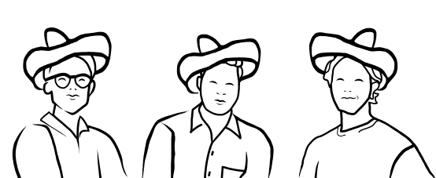
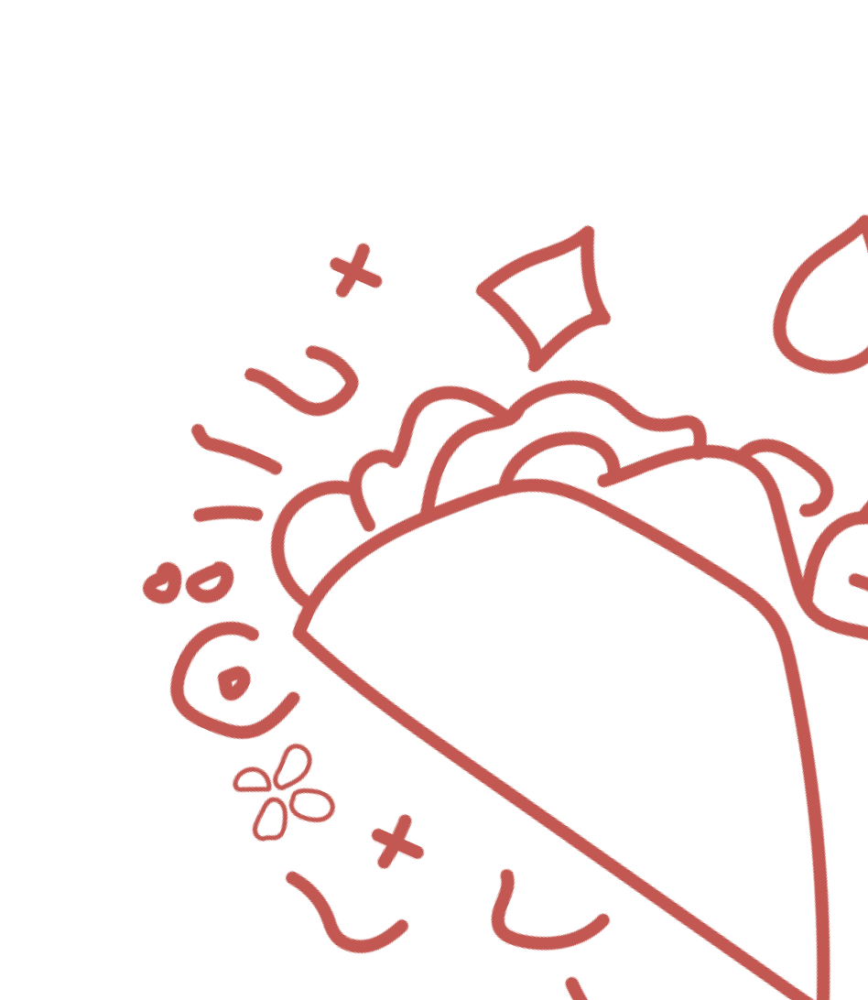
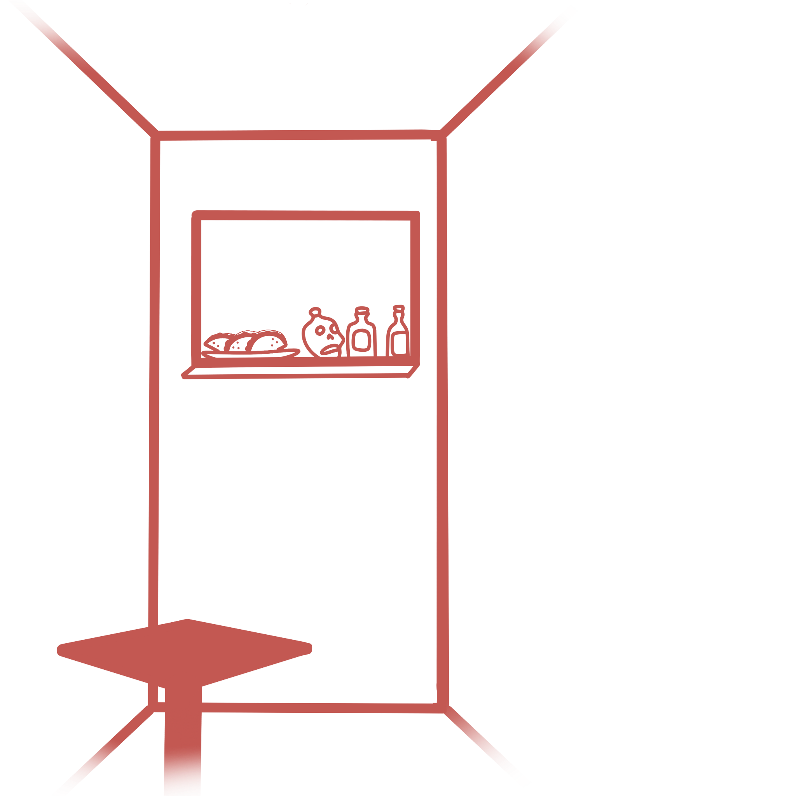

Bienvenido
Velkommen til Four Amigos
Tacos & Tequila

Noticias
Nyheder
Ny tequila blandt vores samling! AMWY tepeztate Mezcal, en agave type, der tager op til 25 år at modne, - vokser kun i det vilde. Tør, men stadig frisk med en diskret sødme. Kom ind og prøv den hos os!
El restaurante
Restauranten
I en hyggelig baggård på Mejlgade 46B finder du Four Amigos. Du vil blive mødt af duften af friskbagte tortillas og en stemning, som man simpelthen bare ikke må gå glip af. Vi er tre kammerater, der gerne vil byde jer indenfor til en oplevelse fuldt med autentiske smage og hjertevarm gæstfrihed. Velkommen!
